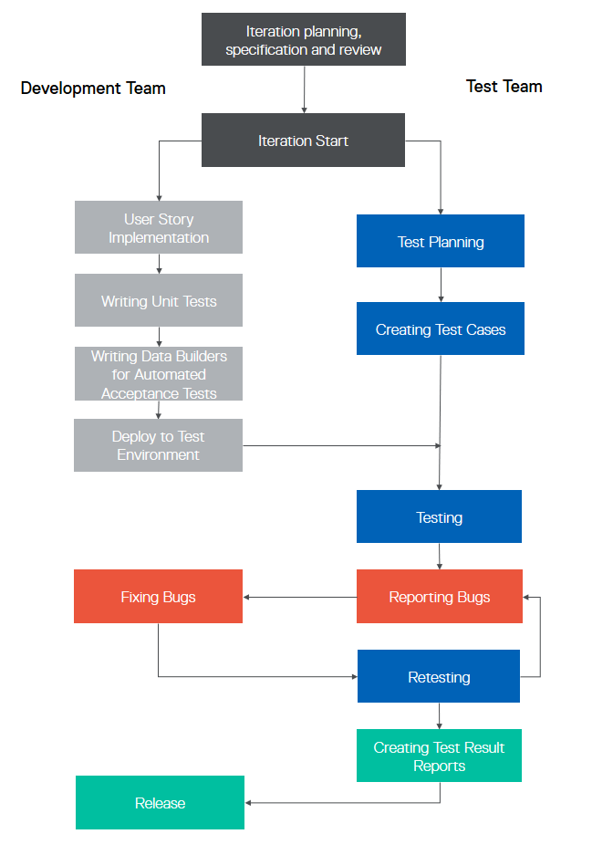

Testing Concepts
Testing your project is one of the best ways to ensure that your software functions as it is supposed to. The role of testing is to find bugs during the early stages of development to minimize risks. QA is the process of assuring quality, not just verifying you will not get an error on some page.
However, testing will not make a system completely bug-free, it can and will reduce the quantity of system faults, help you avoid having major and critical errors and minimize those which can just distract users from using the system.
To assure the quality of a project, the best choice (depending on the size of the team) is to have a QA person or QA team. People who have the knowledge and experience to analyze a product, expose and discover edge cases and understand the techniques and processes that need to be put in place to ensure project quality. A QA engineer will not only check functionality, but will dedicate the proper attention needed to creating test cases and testing.
An important case for having an on-staff QA engineer is that usually when developers test their own code, they look at it positively, are prepared to see it working and make assumptions based on their intimate knowledge of code that cannot be made by customers. Testers on the other hand, actively try to find bugs, try to see where the system brakes and all-in-all look at the system "from a negative perspective". As they say, "You need to have a destructive nature to be a good tester".
With or without a QA engineer, we have compiled a few tips, guidelines and recommendations that we feel can help keep your project on track:
The Four Main Reasons Errors Occur
Errors can appear during all stages of software development; while introducing a feature, specification, development and during the testing phase. These are elements of human error - feature are introduced without taking into consideration how they will work for the end user, specifications dont include integration with an existing or upcoming feature, validation rules and behaviour descriptions are not fully thought through and many more other intricacies that are overlooked. In the development stage, bugs are a natural occurrence and during testing it is not uncommon to discover that fixing a bug actually reveals or introduces new ones.
Generally, errors happen from the following reasons:
- Poor understanding of the feature
- Unclear or contradicting requirements
- Poor alignment with overall architecture / development concept
- Human / programmatic errors
We have compiled a short checklist to use while creating the specification and during the implementation of a feature:
- Did I completely understand what the feature does?
- How should the user use the feature?
- What are the benefits of having this feature?
- Did I consider misuse of this feature?
- Can this feature compromise the security or performance of the system?
- Did I think about all implementation aspects: how it matches the architecture, does it require any global changes in code or configuration?
- Did I document my code well? Does anyone require additional information about my changes?
- Did I clearly describe any discrepancies between the specification and my implementation?
- Did I inform the testers of specific areas which need to be double checked?
- Do the testers need any kind of help to perform the tests (i.e. scripts for generating specific data)?
What is “High-Quality Software”?
Quality doesn't mean "bug free". Quality means, meeting the stated requirements, functions correctly where it is supposed to, there are no critical, blocking or major issues, and that bugs of other severity are brought to the possible minimum or don’t distract/prevent the user from using the system.
This brings us to two questions:
- What should we be testing?
- How do we determine the software’s quality?
Quality is when the software meets all the above mentioned requirements, but there are many more quality attributes surrounding the overall factors that affect behavior, design, and user experience such as usability, performance, reliability, and security.
Let's have a look at them:
Performance
Usually forgotten at the beginning, or left to the very last moment, performance problems are often only revealed when the project goes live. This is mainly when real traffic starts coming to the store and lots of users start using it all at once.
We can prevent this by thinking of performance testing in advance. Plan performance tests for the early development stages, introduce the scripts, load test tools and simulations that simulate big number of users at a time. Run first performance testing at the point when the software becomes usable and passes major end-to-end scenarios such as register/login->add to cart->purchase a product->logout. It is much easier to optimize code during this stage than two weeks before a release.
Security
Is the capability of a system to prevent malicious or accidental actions outside of the designed usage, and to prevent disclosure or loss of information. [https://msdn.microsoft.com/en-us/library/ee658094.aspx]. When working with thousands of people’s data and personal information, security leaks and the resulting money loss means that security testing should be one of the first things you think about. Ensure that confidential user data cannot be revealed, that your frontend doesn't allow SQL injections in the text fields ( SQL injections are SQL queries that could be put into a text field like a password or username and instead of requesting authorisation to the website a request is made to the DB or malicious data is written into it).
Usability
Usability defines how well the application meets user requirements. We are looking for an application that is intuitive and provides a good overall user experience [https://msdn.microsoft.com/en-us/library/ee658094.aspx]. Even if you do not have a QA team you can still run usability testing. "Still" because as mentioned above, developers tend to think positively of their code . Usually a developer only wants to check that the scenarios written in the requirements are passed. But it is important to look at your software from the outside. To imagine you are not the creator but the user. Try to identify what irritates you when using the software. It is very common for us to get frustrated by bad usability and want to fix it ourselves, but we can only report bugs to the creators and wait for the fix. Here you have the opportunity to fix everything yourself in the way you see it the best!
Naturally, there are many more quality attributes and there are lots of articles and resources online that you can use to further research and tailor your own list. However, for us, our top priority is to focus on performance, security and usability.
Development/Testing Process and TDD
Whether you have a QA team or not you will have to test your application. When you do not have a dedicated resource for testing the process can be slightly different. However, there still is a clear process that can be followed. At Spryker structure our testing process to follow the concepts of TDD (Test Driven Development)
Testing Without a Full-Time QA Engineer:
If you do not have a team or a person dedicated for testing, from the first days of development till the go-live stage, you will need to optimize planning and development to leave time for testing.
Here are the steps you should follow:
- As a feature is introduced and all details are formulated, before ending the planning and implementation process, state the acceptance criteria as a list of use cases (or scenarios). If you know how many acceptance scenarios you have you will be better equipped to assess how long the check will take.
- Prioritize test scenarios. Sometimes you will not have enough time to run a full regression test scope for all existing features. In this case, knowing which are the highest priority scenarios helps you to concentrate on them to pass.
- Using TDD for implementation can be a good practice. First write the acceptance tests and then implement until all tests are all passed. Make it part of the development process to write automated tests for each feature. Create not only unit or integration tests, but also UI tests. Ascertain that passing UI scenarios means passing the acceptance test.
- Even if you are using TDD with UI acceptance tests and the feature’s automation coverage is good, make sure to manually test the feature at least once. Automated tests cannot see the software with human eyes and feel the usability quality.
- Testing each module as soon as it it ready. It is best not to wait until the project is more or less done. Instead, adopt the approach that if a feature is ready - test it. Use manual tests and follow your test scenarios to make the process fast and effective.
- By our estimate, testing a module such as the Product Category module with some positive and some negative cases takes 30 - 40 minutes for an experienced tester. An inexperienced person would probably take an hour. Use these estimates to help calculate the time you need for testing in your plans. Planning projects with development time and test time together, helps to create a more realistic timeline. It will also help you to be able to predict your launch date a bit better as a well-tested project is likely to have less surprises towards the end.
The following diagram illustrates what a test process looks like without a QA team.

Testing with a Full-Time QA Engineer or Team:
A QA Engineer or team will probably lead the process and define their own process allowing developers and product owners to do their own job instead of QA. In this case there will be dedicated time for writing test scenarios, testing and retesting things. All in all the process should look more or less like this:

You will still need to adhere to the steps listed above and plan time for testing, but the overall time will still be reduced as far as development staff are not involved in time consuming acceptance testing and can continue with implementing the next feature. Also, the test quality will be much better.
A test engineer should be involved in the development and specification process from the very first days. Testers who know how to identify edge cases and possible test scenarios can look at the specification from a different angle and ask important clarification questions. If a tester receives the requirements for review when the feature is half done, then clarifications, additions and corrections to the specification from the tester will be given too late and this will prolong development time. So, invite the QA team to the specification review before beginning the implementation.
Even if you have manual testers, don't forget the automated test cases. One day you will need to run regression testing, for autotests the full regress for a complete system will take just several hours, for a manual tester it will take several days or even a couple of weeks.
Testware
Testware is everything you will need during testing for planning, design or execution of tests. [ISTQB Glossary Version 2.4]
Think over all things that will you need for proper testing - database access, SQL scripts, environment details, access to job configuration, tools and scripts for performance and load testing, data generators, automated tests, manuals etc. Have all these known and shared within the development and test teams. If somebody masters in anything like DB queries, automation scripts, xpath writing, load testing - let the person write a short manual, share it within the team and this way teach others, this will save time and effort for the whole project team.
During testing iterations, make sure you save, logs, performance notes and screenshots. Write down the specific steps you performed to get a specific result. Do not just delete testing artifacts from previous iterations.
In the future when you will need to remember how something worked, how it was planned and how to check that it works - testware and development artifacts will help do that. Ideally, you should have a separate wiki exactly for such things in which it will be easy to find development documentation.
If you cannot do acceptance automation during development (as it is time consuming), at least take care of all things that will another person needs for writing autotests - write helpful methods (keywords) and data builders that generate test data and put them directly into the database. With this information, even a non-developer can write automated test scenarios provided that all the necessary tools, keywords, setup and clear-down methods are ready for use. Make sure that data builders are not only written small tests, create a proper data-builder that can, if the data is provided, fill in all the fields in your element (e.g. a product abstract) and fill mandatory fields by default if not set by the user. Think about the people using it after you. For you, during implementation you know and understand all the insides of the feature. Therefore, it will take an hour or two to prepare all such things. However, a developer who did not prepare it themself or a person, especially a non-developer may take several days just to understand what is needed and what affects changes have on existing test cases and so on. Certainly, developers can be asked to do it when needed it, but in this case it, will be unplanned time loss for a developer. Why add unnecessary distractions for the developers when proper preparation when time is less of an issues can prevent them.
To recap, think over other people and of yourself in the future, if everybody tries to help others in the team by creating manuals, saving steps, providing access information, this would be a highly-effective team with happy people doing their work and not being distracted or stressed by missing things necessary for their work.
Testing Activities
Be a part of your project. If you have QA professionals working on your project, always communicate with them. QA is a person that should understand your vision, project needs and be your go-to for a second opinion. During testing artifact creation, always let the QA team review them because sometimes what is written with a development approach is not quite understandable for testers.
As already said before - you cannot fully rely on automated test cases, in you need to combine manual tests in the process. Automation is a good supplement to save plenty of time during regression, but not in the early stages.
With automated tests, you should also make sure you define proper pass/fail criteria, e.g. an automatic tests can check that a page with a particular URL is opened and even check that some element on a page exists, but not check whether the whole content is ok. So, manual testing is your best friend here.
Another important moment - testware such as autotests or manuals should always be up to date. If you run the same tests all the time, without any updates, not including implemented extensions to existing features - they will not detect new bugs.
If something was changed during implementation such as validation rules, html elements, steps for some feature using - write them down to make sure these changes are known by everyone who may need them - to mainy update autotests and also know in advance how to perform particular steps.
Real examples:
- If you just change an html element's id, this will not affect the UI much but acceptance autotests can fail as they rely on xpath or css locators. If the person doing automation doesn't know about this change, it can take quite a lot of time to investigate reason why the test failed. If the person knows about the changes, it will take only a couple of minutes to correct the locators.
- If the procedure or accessing the DB has changed, like passwords or names and nobody except the developer knows it, it can also cause time loss and introduce frustration when a person unaware of these changes tries to test with old steps and has no clue whether the current problems are local or something was secretly changed. Yes, everybody can ask if something doesn't work as before, but this is human psychology to try figure things out themselves before asking others.
Link tickets and documents with feature changes to the original features. Make sure that it’s easy to find initial functionality and how it’s connected to the new changes. Be sure that support documentation is also updated and didn’t stay in initial state without new changes.
Link bugs found during testing to the tested feature with a relation like "discovered by" - bugs sometimes reveal uncovered requirements steps and it is easier to track such black points if they are all linked together.
Link tests to use cases and other requirement tickets with relation like "covers" or "verifies", this will help you understand in the future how well your requirement tickets are covered and see whether there are not covered by any tests.
After each completed iteration, create reports and keep them in the same wiki where all other artifacts are based. Reports can show you the state of the project, possible risk features and things that can be improved.
Each iteration, at least big one should be ended with regression testing - here automated regression tests are a magic time saver. If you don’t have time or manpower to perform a full regression, make sure to test at least all high priority test cases to see that all main use scenarios are not broken.
Testing Scenarios
Test scenarios come from use cases or other documented requirements. Use cases usually describe positive scenarios, how the system should work, sometimes also error scenarios are specified, but usually requirements only describe what a user should see with a correct behaviour of the system. Even if negative scenarios are not described, think about them and put them into your test cases, because negative usage scenarios come out of positive. The requirement says, you can create an element with x,y fields using latin characters? Then for sure, there will be cases where you create without these fields, create an identical element or set some unexpected characters. So even if something is not specified it could be undetermined, think 360 degrees.
We mentioned prioritizing test scenarios, make the positive cases that check what should work high priority and negative cases that check that what shouldn’t low priority (unless the case would break everything).
Building Scenarios and prioritizing saves time and introduces clarity into the development environment. Consider creating a check-list of the different tests and define priority and depth for each test. How much and how deep they should go - this is all up to you and your project – focusing on critical functionality helps.
Here is a sample of what the test should include:
Positive cases:
- Create something
- Edit it
- Activate/ deactivate it
- Delete it
- Run validation with allowed characters
Negative cases:
- Not allowed character validation
- Create the same thing twice
- Create an empty thing (edited)
Remember to list the steps that were done during the test to remember what needs to be done to pass.
Test Environments
Test environments should as much as possible, correspond with the final target or production environments. This is to minimize the risk of environment-specific failures not being found while testing.
Where to Test
When you are working on a single module or functionality, it is easy to forget that the end result is a collection of many working pieces. Do not limit testing to just either Yves or Zed, check them both together. For example; If you create a new shipment method, it is not enough to see the success message in Zed. Take a moment to go to Yves to see that the new element is also there, functional and doesn’t throw an exception when you try to select/open it.
Test and Test Again
This is note for developers - if you are implementing new code, logically you are already on the branch and have the application running on the VM. This is an ideal time to take a few moments to open Yves/Zed and check that your fix is working and doesn’t break anything else. Remembering to check how a fix looks like in the UI can prevent having to make a bigger fix down the line. This simple check can save lots of time. Detecting an issue during the development stage is faster and easier to fix than during the testing stage.
Even if you tested during development and it worked for you, ask somebody to test it after the development is done. If you do not have a QA in the team, this could be another developer or product owner, but the final check should always be done on a different machine and best - by a different person. Why? Some things can pass for you locally because you have some special extensions, software installed or a special state of DB, in an environment with different conditions something can fail, so you need to ensure that things work not only for you locally but also on all environments. Another person for testing is needed, because it will bring a new view on the feature and new scenarios of using it so new problems could be revealed.
Re-Testing and Regression Testing
After a defect is detected and fixed, the software should be re-tested to confirm that the original defect has been successfully removed and new defects were not revealed or introduced. This is regression testing - checking already existing and checked functionalities or features after some changes were done to any of the related things like dependant module changes or DB changes.
This will not be much of a problem if you have documented previously test scenarios and stored test artifacts from previous runs, you will already have all scenarios and can compare how things were working before. Also, automation will greatly help. Automation can not really cover 100% of your scenarios but even if automation covers only 40%, this means you will have only 60% left for manual testing. Give special attention to covering with automation tests scenarios on field validation and other things that can be very long and annoying to do manually. There are a lot of tools that have a usable IDE for test cases so that even a non-technical person who has no idea about coding can write automated tests, just try them.
The Psychology of Testing
The mindset during testing is different than the mindset and view during development. With the right mindset, developers can test their own code, but giving this task to a tester helps focus efforts and provide additional benefits, such as an independent view by a trained professional testing resource.
A certain degree of independence often makes the tester more effective at finding defects and failures. We can define several levels from low to high:
- Test by the author (developer)
- Test by another developer not involved in implementing this feature
- Test by internal tester or test team as people familiar with the software but having a mindset of a user rather than a developer
- Test by a person from a different organization or company (e.g. externally invited test team)
[ISTQB Syllabus Released Version 2011]
The third variant is the preferred one, because it has a necessary level of abstraction from code and concentration on functionality and usability. At the same time, these are testers you can always have available for project needs unlike the fourth variant when testers are available for a limited time period. The Second level is the next best thing if the third and fourth cannot be used in the project.
Be prepared that even if all the tests done by test team passed, there will still be bugs reported by the real end-users after the software goes life. Even with their level of abstraction from code, testers cannot 100% simulate real user behaviour, because testers are psychologically stuck to the requirements and are too familiar with the system. This makes it hard to notice some defects in scenarios other than tested and repeated so many times already. A real user, has no idea about requirements and just wants to use the software in all possible and sometimes impossible ways. This is why we cannot say that the software is 100% bug-free after all tests and quality assurance. So, there are always ways for improvement.
Endnotes
We hope this information helps you plan your projects and resources to support producing amazing results with the Spryker Commerce OS. Remember to, plan your tests and define clear priorities and requirements. Write test scenarios that reflect positive and negative cases. Run manual tests during the development stage. Prepare test artifacts, manuals and data builders for automation. Keep records and think over other team members. Don’t wait with testing until testing stage, continuously test both in development and retest after merging to master – because well… things happen sometimes.